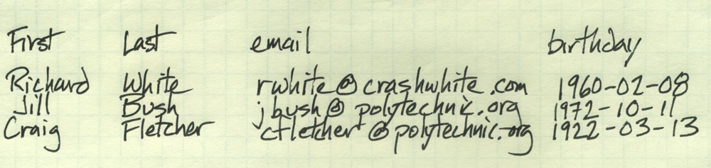
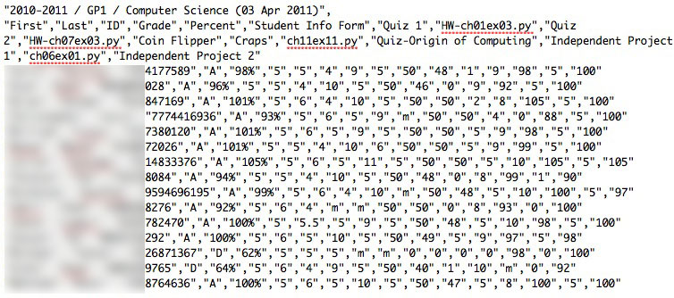
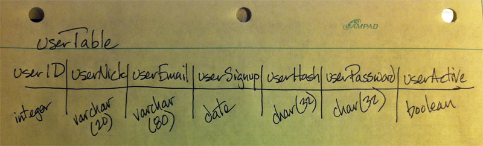
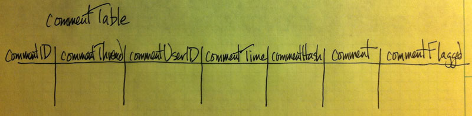
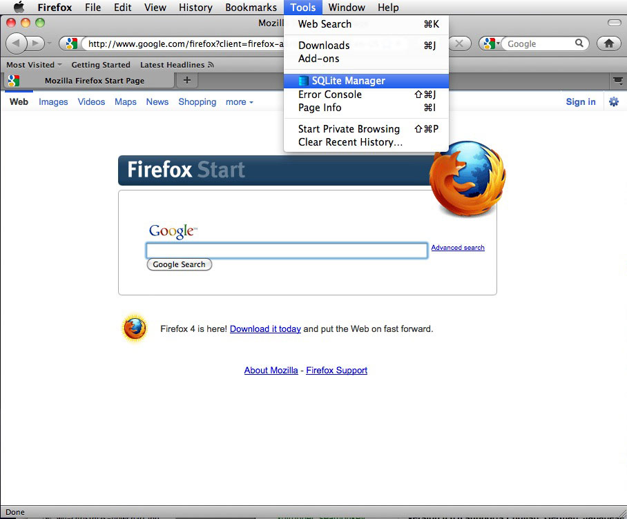
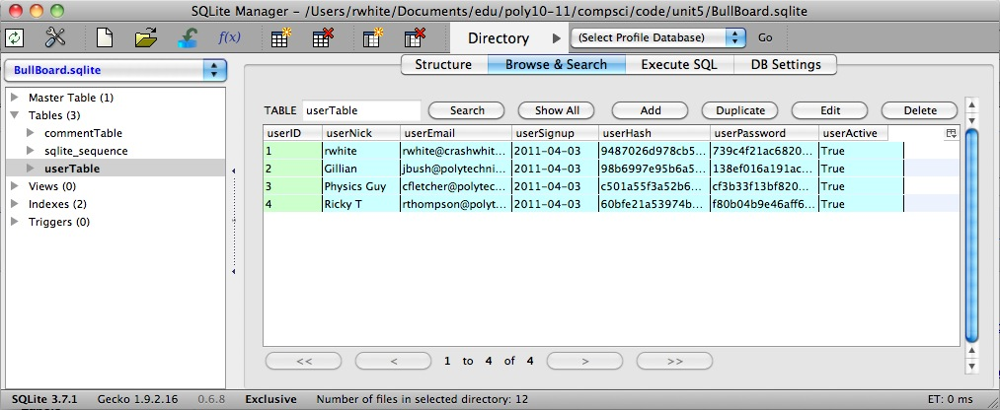

Introduction to Computer Science:
Databases
Welcome to Unit 5!
- Unit 5, Day 1 - External files, and flat-file databases
- Unit 5, Day 2 - AddressBook Project
- Unit 5, Day 3 - Intro to Databases: tables, records, and fields
- Unit 5, Day 4 - Intro to sqlite and Firefox extensions
- Unit 5, Day 5-6 - Python and sqlite
- Unit 5, Day 7 - Python and Apache
1. External files, and flat-file databases
It has been said: "All programs of significance are either games or databases."
We've already studied a little about programming games... so now it's time to get serious. We need to talk about databases.
Let's begin with the easy stuff.
1.a. Program files
We've been using Python in two different ways in here:
- interactive mode, in which we can type commands "live" and have Python implement them immediately
>>> print "So then he said, \"Hey, what's up?\"" So then he said, "Hey what's up?"
- program mode, in which we enter commands into a text file. The statements are implemented later when we run the program.$ python craps_rwhite.py Hi! What's your name? Richard Well, Richard, wanna play craps (y/n)? y Alrighty, then! Press <enter> to roll the dice...
We like program mode because it allows us to save commands—potentially a long, complicated series of commands—over time, to be used again later on.
1.b. Data files
The same way that we like having lines of a program saved when a program isn't running, we often want to be able to save program data, even when a program isn't running.
Examples: An Address Book, or an essay you're writing, or an email draft.
What we're going to be investigating now is how we can have our Python programs collect data entered by the user, store that data in an external file (outside of the program), and close that file up for safe keeping on the disk.
Obviously, we'll also need to have our programs open up that external file, read the data from it into the program, use it (including modifying or even deleting it), and then close the file again.
1.c. What does data in a file look like?
What file data looks like depends on the file. For the moment, we're going to be using text files for out data, so our data will be readable by any text editor.
Before we get too far into this, you should know about metacharacters.
A metacharacter is a character that has a special meaning outside of its literal meaning.
Example: \ (a backslash) is a metacharacter. When placed in front of another character, it has another meaning.
Example: \n represents a "new-line" in Python. Printing "\n" will cause subsequent output to begin displaying on a new line.
Example: \t represents a Tab. Print "\t" causes a Tab (spacing) to be displayed in output.
You can see that the \n caused output to jump to the next line, and the \t caused a tab to space out the output there.
You might also have noticed that the double-quote ", which we ordinarily use to indicate output, was actually printed when we put the backslash metacharacter in front of it.
There are other metacharacters as well which come in handy in various circumstances.
1.d. A list of Contact Information
Before we begin writing our next program, designed to keep track of contact information (addresses and phone numbers, etc.), let's look at one way we might do that in real life.
In real life, I might have a physical address book with pages I can flip. There might be one page for each person I know, and I can put contact information for that person on that page.
If I really wanted to streamline the process, I could probably just write the contact information for each person down on a single line of a piece of paper, something like this:
That's pretty much exactly what we're going to do in our next program.
1.e. Writing data to a file
Let's take a look at how we can collect information, store it in our program, and then write it to an external file.
Enter this short program address_book.py into the computer and run it. The program collects data from the user into a list, and then converts the lists to text to be written to an external file.
After running the program and entering a contact or two, take a look in the same directory where the program address_book.py is located. Notice anything new there?
If everything worked as expected, there should be a new file in that directory, contacts.txt. This is a text file that you can open with a text editor to examine. Or use the cat command in the Terminal to list it out:
1.f. Reading data from a file
This is nice little program but we've still got some work to do on it. One problem is the fact that we're able to write the information to the file, but we can't really get that information back into our program yet.
Let's look at one way to go about doing that.
Add these functions, one at at time to your address book program and test them out to make sure they work. You'll obviously need to determine where in your main() function you should call these new functions, and include appropriate calls to the functions at those locations.
To this point, the only way that we've been able to view our contacts.txt file is by looking at it in a text editor. Let's include a function that will allow us to examine that data from within the program itself.
Note the comment that says this function is called by option 2 in the main menu, so... it looks like you'll need to modify code there as well.
This is a really good start to a nice little program. Can you anticipate what other features are going to need to be added to this program to make it more fully functional?
Note that in this initialize() example, we've read the external file line by line, and put each line into a list. There are other ways to read an external file as well.
- Read the entire file at once as a single string:
contacts = infile.read() # Gets data all at once infile.close() print contacts # returns one long string
- Read the entire file at once but put it into separate lines:
contacts = file.readlines() # reads a list infile.close() # close the file print contacts # print the list- Read the file line by line, putting lines into a list as you go:
contacts = [] # initialize the list for line in infile: # Gets only one line contacts.append(line.rstrip()) # add to list infile.close() print contacts - Read the entire file at once but put it into separate lines:
Homework
Read Chapter 5, Section 5.9.; do Chapter 5 programming exercises #14.
2. Address Book Project
Based on the work we've done in class so far, and on the specifications outlined on the assignment sheet linked to here, create an Address Book that uses an external text file to maintain a list of contact information.
3. Intro to Databases: tables, records, and fields
A database is a system of storing information long-term. Examples range from contacts.txt in our recent project all the way to the databases that are so large they are distributed over entire networks: Google's search indexes, and Amazon.com's inventory, prices, and orders.
Some terminology: The database actually stores the data. A database management system (DBMS) accesses the data and provides an interface for the user/system.
Over the next few days, we're going to be creating both databases of stored information, and using simple RDBMSs to manipulate that data.
3.a. Flat file databases, and CSV
In our contacts.txt database, information is stored in a single flat file, which can be easily accessed and manipulated via text methods, if we choose to.
Once especially common type of flat file database format is called "Comma-Separated-Values" file, or CSV. In fact, your grades for this class, stored and manipulated by computers at Engrade, are stored in a CSV file. Here's a copy of your data:
Just as we used tabs and newlines to separate the pieces of data in your address book, the CSV file uses commas and newlines to separate data.
The strength of the flat file database is its simplicity. Its weakness, however, is its inability to store and express more complex relationships. For most serious databases, a Relational Database is used, in which data is stored in a series of tables.
There are lots of different relational database systems that one can choose from, including MySQL, PostgreSQL, and Oracle. As you might guess from some of the names, these databases use something called Structured Query Language (SQL) to interact with the database.
For our own study of databases, we're going to be using a small but powerful relational database system called SQLite.
3.b. Tables, Records, and Fields
A relational database is one that allows for more complex relationships between the data in the database. A relational database management system (RDBMS) provides tools to easily and quickly use that data.
Database vocabulary
- Database – a collection of sets of information, organized into tables.
- Table – a collection of one set of information, organized as records ("rows") and columns ("fields") of individual pieces of data. Easily visualized as a spreadsheet.
- Record – a "row" of information concerning a single object in the data base, consisting of fields.
- Field – a piece of information describing one aspect of the object described in the record.
Most people find it helpful to visualize a table in a database as a spreadsheet:
| userID | userNick | userEmail | userSignup | userAuth |
| 1 | rwhite | rwhite@crashwhite.com | 4/3/11 | 9487026d978cb596dbe42b9eef6c59b5 |
| 2 | Gillian | jbush@polytechnic.org | 4/3/11 | 98b6997e95b6a5cda3c974076aaae28f |
| 3 | PhysicsGuy | cfletcher@polytechnic.org | 4/3/11 | 9c0aafe998ad8276158552b2c17a618e |
As with any programming that has the potential for being a bit complex, it's a good idea to step away from the computer when designing a database. Let's look at how one goes about creating a database.
3.c. Designing a Database
Before we can actually create our database, we need to:
- visualize it (sketch it out)
- identify specifically what information and what information types will be stored in each field of each table
In order to understand this design process, let's consider an actual context.
ASSIGNMENT
Design a database that will allow registered users to leave comments for each other on a computer-based discussion board.
It might be clear right from the start that we have two main types of information that we're going to have to keep track of: users, and comments. Let's start out by creating a table for each one of those, which will hold the different types of information that we'll need to keep track of.
Designing a database table is something that isn't necessarily obvious at first, so some of these columns (fields) may not make sense just yet. Still, it may help to have some idea of where we're going with all of this. Here's what each field represents for a given row (record):
- userID - This is an integer that we'll use to keep track of the different users. Each user will have a unique userID, and the database itself will keep track of that number. In database-talk, the userID is a unique primary key.
- userNick - We're going to allow users to identify themselves with a nickname that will be displayed on the page when they leave a comment. We don't know how long their nickname will be, but they can have up to 20 characters for that name.
- userEmail - We'll want to be able to email our users. This is what they'll use to log in, too.
- userSignup - This is a particular kind of data, a DATE or TIMEDATE that we can use to track when people first signup for our Discussion Board.
- userHash - This is unique 32-character code that will also represent the user in various circumstances.
- userPassword - A 32-character hash of the user's password.
- userActive - a Boolean variable set to True or False, depending on whether the user is currently permitted to be active on the Discussion Board.
We're jump-starting the database here, and almost certainly not giving you enough information to know all you should, but... with that in mind, take a look at the second table in our database: the commentTable:
Based on our brief discussion to this point, can you guess what type of data will be stored in each of these fields, and what each will be used for?
4. Intro to sqlite and Firefox extensions
4. a. Getting ready to create the database
So, we've got a couple of tables for our database, or at least a first draft of those tables. How does one actually create that database on the computer?
A relational database is not represented by text in a text file; it's coded in binary, so we're going to have to use some type of software to create and manage that information.
A reminder: A relational database is one that allows for looking at complex relationships between the data in the database. A relational database management system (RDBMS) provides tools to easily and quickly use that data.
So we're going to be working with a database for our hypothetical Discussion Board. SQLite is the RDBMS that we'll be using to do that work.
We have a number of clients (programs) that we can use to work with SQLite. Navicat makes a nice one, although we'll be using a Firefox extension which is quite a bit more lightweight.
Also, you can always use the Command Line Interface (CLI) provided by SQLite to work with the data, although we won't be bothering with that for our work in here. Although the CLI is ultimately the most powerful way to work with databases, it can be a bit odd at first, unless you enjoy issuing commands like this:
Those are the types of commands that you would issue to SQLite if you launched it from the Terminal:
Although one can manipulate a database this way—and we'd absolutely need to use this method if we were going to be manipulating a database on a remote server—we're actually going to take advantage of a different interface: the Firefox browser.
- Make sure Firefox is installed on your computer. Take note of what version of Firefox you have installed.
- Go to http://code.google.com/p/sqlite-manager/, or
https://addons.mozilla.org/en-US/firefox/addon/sqlite-manager/
with your Firefox browser to download sqlite-manager to your machine and install the browser extension. - Launch the SQLite Manager extension by going to Firefox > Tools > SQLite Manager
 - Use the buttons/menus to create your database and tables, and to manage, populate, and query the data in those tables. (We'll be talking about how to do that next.)

4. b. Creating the Database and tables on the computer
Working with a Database
When working databases, you'll typically want to do one of just a few things:
- Create the database
- Create tables in that database
- Insert (enter) data into a table
- Select (retrieve) data from a table
- Update (edit) data in a table
- Delete data from a table
A command to perform one of these actions is called a query.
Let's see a movie on how to use the Firefox Extension SQLite Manager to create our database in SQLite and enter the information for our userTable.
After watching the video, take a moment to launch Firefox and create your own version of this database and first table.
5. Python and sqlite
Well, we've got a BullBoard.sqlite database, and we'd like to be able to manipulate it in all the ways that we manipulated our AddressBook.py data that was stored in contacts.txt. How do we get Python to manage that for us?
5.a. Beginning the program
Let's start with the usual—some comments and some import statements. (Note that this is an abbreviated version of the program, with most of the comments removed for brevity. You can also see a more complete version of the program, with many comments.
There are some new modules here that we haven't seen before—lots of good stuff that we'll be learning!
5.b. Write a main() function to operate our program
As we did with our Address Book program, let's create a menu that we can use to drive our program. We'll include 5 basic operations.
This is a nice start to the program, although you might be wondering what cursor and connection refer to. We'll have to discuss those below.
Also, we can't really do anything with it yet—we need to write those functions.
Let's begin with opening up the database.
5.c. Opening and closing a database
Assuming the database has already been created (as we've done using SQLite Manager), your Python program is going to need to be able to open that database at the beginning of the program. Here's a procedure that will let us do that.
The connection variable is used to refer to the connection that we've established with this particular database. The cursor object is used to point to successive records in a database, and return them to our program so that we can access them.
Your Python program also needs to be able to close that database once we're done working with it. This one is easy.
5.d. Adding a user to the database
Finally... now we get to actually do something with our database. Let's figure out how we can add users and store them in the database.
There are a few things about this program, as written, that are already going to cause us problems. Maybe you've already anticipated some of them.
- When we type in the password, anyone looking over our shoulder can see it. We should build in some security there.
- If someone tries to enter an email or a nickname that's already been registered, we don't check to see if someone with that info already exists in the data table. We need to figure out at some point how to manage that possibility.
But for now, let's just see if this works. Go ahead and run the program, and see if you can enter any information into the database. You won't be able to verify that the information has been written to the database just yet—we still need to write that function!—but you can certainly user SQLite Manager in Firefox to take a look and see if the program is working as expected.
5.e. Viewing the userTable
Things are going just fine—we can add users to our database using the Python program that we've written.
We can also read information from the database as well. Let's see how that works by adding a new function to our program:
Take a moment to enter that function into your program, and then call it from the main() to test it.
If you'd like to clean this up a bit before we move on to looking at the comments, now is a good time to do that. We can address our two concerns above—password security and ensuring that we con't have duplicates in out userTable—with a bit more code.
5.f. The Comments Table
Our userTable is coming along pretty nicely... and now we turn our attention to the commentsTable.
In the context of our Discussion Board, the commentsTable is going to be used to store the comments that people leave for each other on the database. We've already spent a little time thinking about what the commentsTable will look like. Now let's figure out how to make it happen.
5.f.i. Creating the commentsTable
As before, we'll use the Firefox extension SQLite Manager to create the new table.
Create the commentsTable for BullBoard.sqlite
Use SQLite Manager to create the table that we've already designed, OR start up SQLite3 at the command line and see if you can figure out what command will create the table there.
5.f.ii. Entering data into the commentsTable
We want people to be able to, using our Python program, enter comments into the table.
This turns out to be a bit tricky, because we don't want just anyone to be able to leave a comment—only if people are in the userTable do we want them to have that capability.
Also, the interface here is a bit clunky in your program, but this is the best we can do for the moment: we'll have the program ask the user their name, which comment they're replying too (if any), and what their new comment is.
Create a new function, add_comment, that will allow users to add a comment to our new table, commentsTable.
You'll also need to add a new menu item into your main program so that you can test this function. Run the program and test out the add_comment() function, checking with Firefox's SQLite Manager to see that the commentsTable is being updated correctly.
5.f.iii. Viewing the commentsTable
Well, we're in pretty good shape to this point. We're able to add users and comments to the database, and we're able to view the users. What's the next logical step?
We need to view the comments! We're going to take this in two steps.
Write a new function, view_comments(c), that allows the user to see all the comments that have been listed.
You may already have some idea of how to do this, based on our experience with viewing the users. We want to get the commentThread, commentUserID, commentTime, and comment from the commentTable, but only if the comment hasn't been flagged. Take a guess at how you might do that, using the code listing hidden below for help as necessary.
That's not bad... but there's still something else that we need to do to make this work the way it should.
Once you've entered a few comments, and a few follow-up comments referring to other threads, you'll see one of the problems with our view_comments() function: it's hard to follow a thread.
Modify the view_comments(c) function so that it prints comments, organized by thread.
6. Python and Apache
Not done this year.